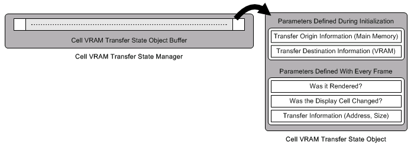

Cell VRAM Transfer State Manager Overview
Conceptual Diagram

Description
The Cell VRAM Transfer State Object manages statuses such as: the information about the data of the VRAM transfer origin, information about the data of the VRAM transfer destination, if the Cell Animation itself is in a state requiring VRAM transfer, the type of image to be transferred, if the cell is being rendered, etc. The VRAM transfer format Cell Animation maintains the Cell VRAM Transfer State Object as a data member; more specifically, it maintains a handle obtained during initialization.)
The user carries out operations for the Cell VRAM Transfer State Object using this handle.
The Cell VRAM Transfer State Manager checks the state of the Cell VRAM Transfer State Object with each frame and determines if it is necessary to execute a VRAM transfer.
The Manager requests the required VRAM transfer task execution request by utilizing request functions. Be aware that the Manager only carries out requests. The actual execution of the VRAM transfer and management of the transfer tasks is left to an external module. For the actual VRAM transfer, the VRAM Transfer Manager in the Gfd (graphics foundation) library in the TWL-System can be used. If the consistency of the API is maintained, it is possible to use the VRAM transfer module implemented by the user.
The example below shows the processing flow until transfer cell animation is detected using the VRAM Transfer State Object.
=========== Initialization Process ===========
1. Initialize the Cell VRAM Transfer State Object Manager (the NNS_G2dInitCellTransferStateManager function).
2. Get the Cell VRAM Transfer State Object Handle (the NNS_G2dGetNewCellTransferStateHandle function)
and initialize the VRAM Transfer Cell Animation (the NNS_G2dInitCellAnimationVramTransfered function).
=========== Game Loop ===========
3. Update the transfer state (the NNS_G2dSetCellTransferStateRequested function).
4. Update the status of rendered or not (the NNSi_G2dSetCellTransferStateCellDrawnFlag function).
5. Update the Cell VRAM Transfer State Object Manager (the NNS_G2dUpdateCellTransferStateManager function).
At this point, transfer processing is carried out where necessary using the object.
=========== End Process ===========
6. Cell VRAM Transfer State Object Handles that are no longer in use are returned to the Manager (the NNS_G2dFreeCellTransferStateHandle function).
See Also
None.
Revision History
2004/12/06 Initial version.
CONFIDENTIAL